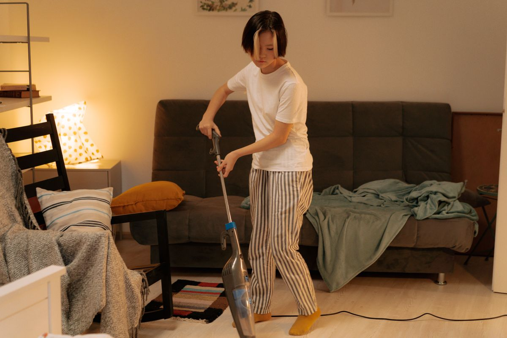

Ningún apartado de Amazon está tan lleno de números que no significan nada como el de los aspiradores. Un aparato anuncia 1.200 W, el de al lado 25 kPa y el tercero 150 vatios-aire, y no hay forma de comparar los tres. La razón es que solo uno de esos tres mide lo que aspira.
Los vatios son lo que el aparato consume de la luz, no lo que levanta del suelo. Un motor de 1.200 W mal diseñado, con un conducto estrecho y un filtro sucio, aspira menos que uno de 500 W bien hecho.
Es el número que más se anuncia porque es el más fácil de hacer grande y el que más impresiona. En los aspiradores con cable todavía verás cifras de cuatro dígitos; en los de batería ya casi no se usa, porque delataría lo poco que consumen.
Si en la ficha solo hay vatios, no sabes cuánto aspira. Punto.
Los pascales (Pa, o kilopascales, kPa) miden la depresión que crea el motor: cuánto tira hacia arriba con la boca tapada. Es un dato real y comparable entre aparatos.
Lo que hay que saber es que se mide con la boca cerrada, o sea sin nada de aire moviéndose. Es una medida de fuerza bruta. Sirve para arrancar pelo enredado de una alfombra o pegar el cabezal a una moqueta, y por eso los robots aspiradores lo usan tanto en su publicidad.
Pero un aspirador no trabaja con la boca tapada: trabaja con aire entrando. Y ahí entra el tercer número.
Los vatios-aire (AW, «air watts») combinan las dos cosas: la fuerza con la que tira y cuánto aire mueve al mismo tiempo. Es lo más cercano a «cuánta suciedad se lleva» que existe en una ficha técnica.
Es también el que menos fabricantes publican, precisamente porque es el más difícil de inflar. Cuando lo veas, es buena señal: significa que el fabricante se ha medido con la vara honesta.
| Dato | Qué mide | ¿Sirve para comparar? |
|---|---|---|
| Vatios (W) | Lo que gasta de luz | No. Nada que ver con la succión |
| Pascales (Pa, kPa) | La fuerza con la boca tapada | Sí, pero solo la fuerza bruta |
| Vatios-aire (AW) | Fuerza más caudal de aire | Sí. Es el bueno |
Y una advertencia sobre los tres: la cifra siempre es la del modo máximo, que en un aparato de batería dura entre cinco y quince minutos. La autonomía que anuncian, en cambio, es la del modo más flojo. Nunca son la misma prueba.
HEPA es un estándar de filtrado de partículas muy finas: polen, ácaros, restos de piel. Para alguien con alergia o asma, la diferencia es real y se nota.
La trampa está en cómo se anuncia. «Con filtro HEPA» no es lo mismo que «sellado». Si el aparato lleva un filtro HEPA excelente pero la carcasa tiene fugas, el aire sucio sale por las juntas sin pasar por el filtro: has aspirado el polvo del suelo para soltarlo en el aire de la habitación, que es justo lo que querías evitar.
Lo que hay que buscar en la ficha es una frase del tipo «sistema de filtración sellado» o «todo el aire de salida pasa por el filtro». Sin eso, el HEPA es un adorno.
Y dos cosas prácticas: los filtros HEPA se cambian, hay que mirar cuánto cuesta el recambio antes de comprar; y muchos son lavables, pero solo con agua y secándolos del todo, porque un filtro húmedo pierde capacidad y coge olor.
Con esto, las guías donde estos números deciden: aspiradores de escoba y robots aspiradores.